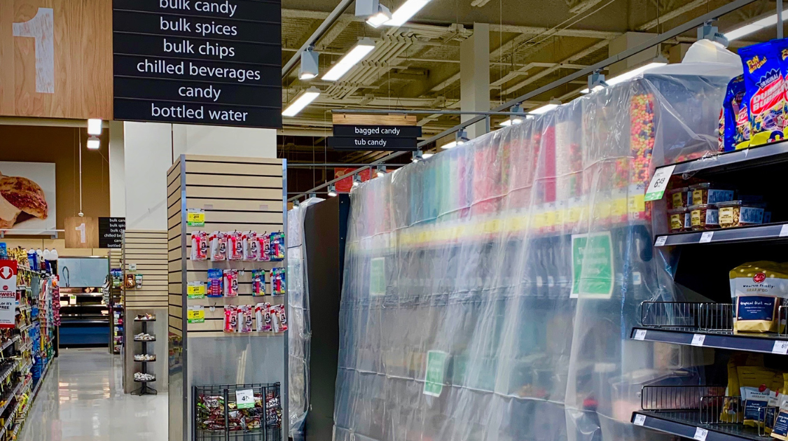

Coronavirus
Uncertain Future Over COVID–19
By Sean Oh | Published Mar 18, 2020 11:20 p.m. PST

As the global community continues to struggle with COVID-19, recently characterized as a pandemic by the World Health Organization (WHO), British Columbia takes stronger measures to combat the surge in confirmed cases within the province.
British Columbia, in Canada, has the second largest number of confirmed cases with 186 patients having been diagnosed with COVID-19, only behind Ontario with a marginal difference of 3 confirmed cases. With a rapid increase in the number of confirmed cases since January 15, 2020, John Horgan and his government has been facing mounting pressure to respond to the pandemic.
British Columbia's Response
In light of recent events—the first COVID-19 related death of a care home resident in North Vancouver—British Columbians received a strong response from the provincial government against the spreading virus.
On March 17th, 2020, the B.C. government has announced to suspend all kindergarten to Grade 12 classes indefinitely to prevent further spreading the virus. In addition, the province has seen indefinite closures in restaurants, bars, community centers, ski hills, some retail stores such as lululemon, public libraries—most areas where more than 50 people can come together.
Unanswered Questions
Although British Columbia's tough response is applauded by many as the responsible action to take and is similar to how the other provinces such as Ontario and Alberta have responded, there remains uncertainty for families and business owners. One major problem being that of most families and students being unfamiliar with how they are to receive assignments and be taught through virtual classrooms—a concept that has not been clearly explained to most public citizens.
Another growing fear is that of working parents and the limited options they have when keeping their children busy or having them properly supervised while parents go out to work.
Small business owners are facing intense pressure with closures and the prospect of being unable to pay next month's rent.
Students' Perspectives
Students, especially those of older grades, are also feeling the impacts of the COVID-19 through, for example, having their SAT exams being postponed or cancelled, their AP exams being postponed, having to see their teachers through the electronic devices, or simply being unable to go outside during the weekends.
Most specifically, students without access to the internet face the possibility of missing out on school.
Arguably, however, some students understand the gravity of the situation and are continuously supporting one another. This looks like sending friends messages about school closures, posting on social media as to how you can better protect yourself in the face of the pandemic, and encouraging one another with supportive messages, such as "stay safe" and to "make the most out of this time."